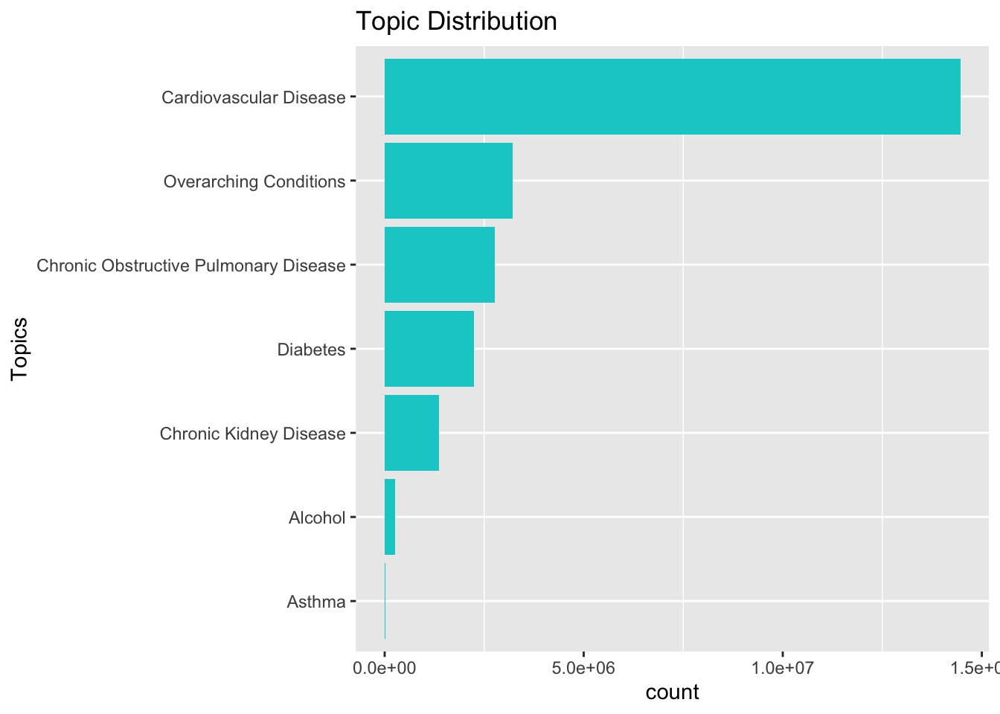
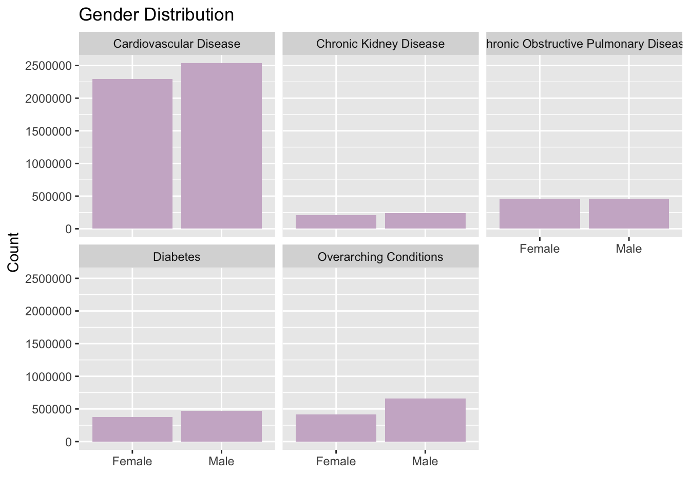
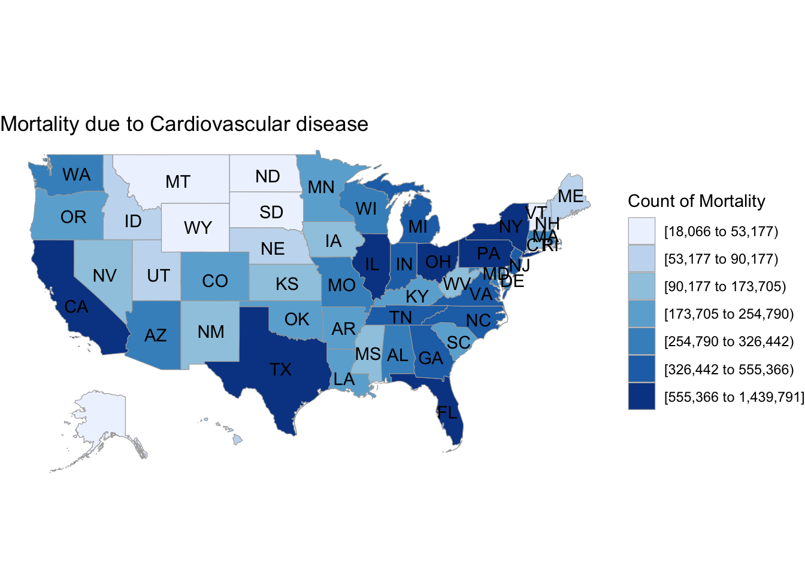
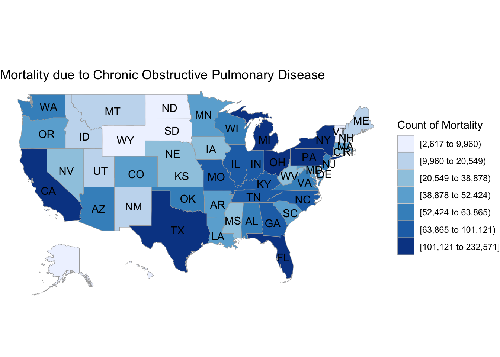
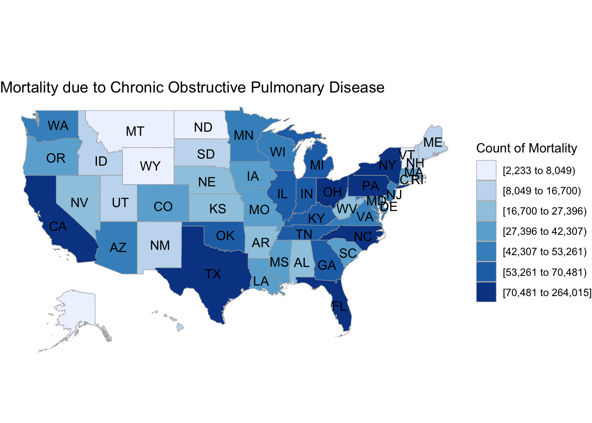

Chapter 4 Results
4.1 Topic Distribution
This plot shows the distribution of diseases across the country, It indicates that the number of people affected by “Cardiovascular Disease” is significantly higher in comparison with the rest of the prevalent diseases that include “Overarching Conditions”, “Chronic Obstructive Pulmonary Disease”, “Diabetes”, and “Chronic Kidney Disease”.

4.2 Gender Distribution
From the plot below, we estimate the number of females and males that have been affected by a specific disease.
Key takeaways: 1. Cardiovascular Disease (CVD): About 2500000 males are affected by CVD whereas the number of females is around 2250000. 2. Chronic Kidney Disease: There is a very slight difference between the count of the male and female which is below 500000. 3. Chronic Obstructive Pulmonary Disease Disease: The ratio od male to female in this case in 1, which indicates equal number of males and females affected by this disease in the US. 4.Diabetes: The males affected is close to 500000 and the number of females is slighly over 450000. 5. Overarching Conditions: The male count is around 700000 and that of the female is lower than 500000.

4.3 Graph Showing the Top Cardiovascular Diseases
4.3.1 Geomap : Mortality due to Cardiovascular Diseases
The plot shows the total count of the cardiovascular diseases across multiple states. The data belongs to the below topics and has been aggregated to provide complete picture.
Questions
-
[1] “Mortality from coronary heart disease”
-
[2] “Mortality from total cardiovascular diseases”
-
[3] “Mortality from cerebrovascular disease (stroke)”
-
[4] “Mortality from diseases of the heart”
-
[5] “Mortality from heart failure”
States with highest mortality: Texas, New York, Illinois, California, Florida
States with lowest mortality: Montana, North Dakota, Wyoming, South Dakota, Utah

4.3.2 Geomap : Mortality due to Chronic Obstructive Pulmonary Disease
The plot shows the total count of the cardiovascular diseases across multiple states. The data belongs to the below topics and has been aggregated to provide complete picture.
Questions-
[1] “Mortality from coronary heart disease”
-
[2] “Mortality from total cardiovascular diseases”
-
[3] “Mortality from cerebrovascular disease (stroke)”
-
[4] “Mortality from diseases of the heart”
-
[5] “Mortality from heart failure”
States with highest mortality: Texas, New York, Ohio, California, Florida
States with lowest mortality: North Dakota, Wyoming, South Dakota, Utah, New Mexico

4.3.3 Geomap : Mortality due to Diabetes
The plot shows the total count of the cardiovascular diseases across multiple states. The data belongs to the below topics and has been aggregated to provide complete picture.
Questions-
[1] “Mortality with diabetic ketoacidosis reported as any listed cause of death”
-
[2] “Mortality due to diabetes reported as any listed cause of death”
States with highest mortality: Texas, New York, Ohio, California, Florida
States with lowest mortality: Montana, North Dakota, Wyoming, South Dakota, Utah

4.4 Timeseries Faceted Geoplot
In this plot we’re analyzing if the mortality chronic diseases have increased in the past decade. For this we’ve considerered the data for one decade on the top five states from above. This would give us insights on the health care and how people have evolved. It can be helpful in predicting useful information regarding infrastructure of a state.
Key Trends: 1. Cardiovascular Disease Except for New York state, for all the states the mortality caused by cardiovascular disease has increased. 2. Diabetes in Texas As we can observe from the graph the mortality due to diabetes in Texas was ~69,000 in the year 2017, It increased close to 116,000 in 2018 and then took a dip in 2019 to ~72,000. 3. Data consistency for Diabetes Data As we observed in above point the data trend for diabetes data similar across other states as well. It can be accounted to the way data was collected. And this dip is only seen from 2017 to 2019. This trend is interesting as it could mean that from the years 2017 to 2019 information is either with errors or in actual these states had a dip in the mortality due to diabetes.